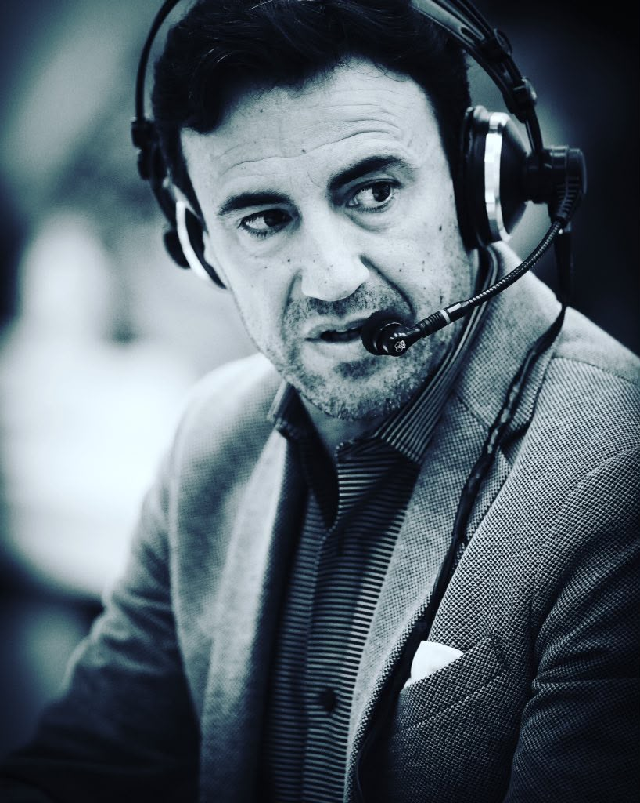
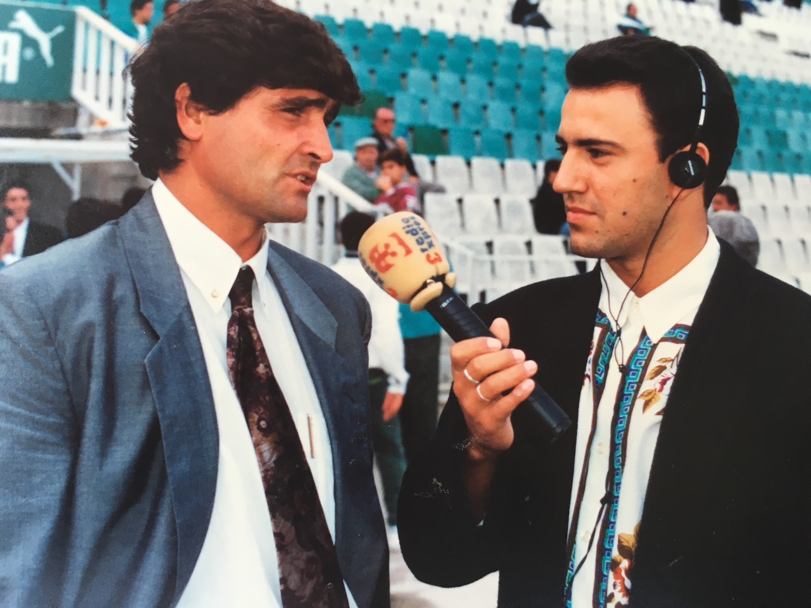
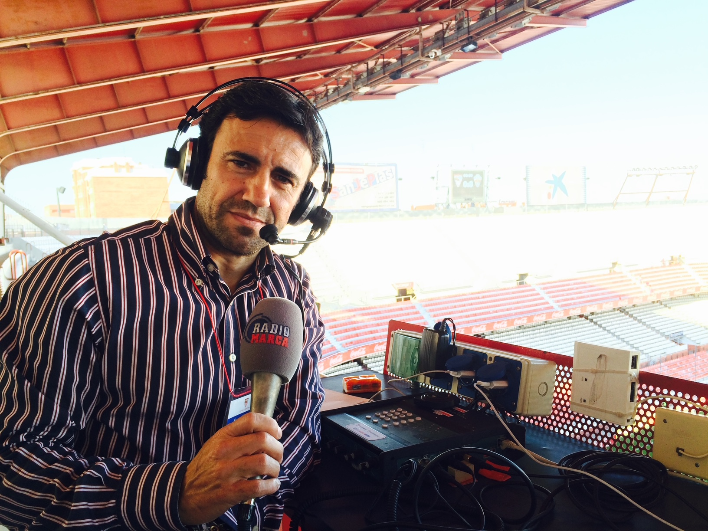
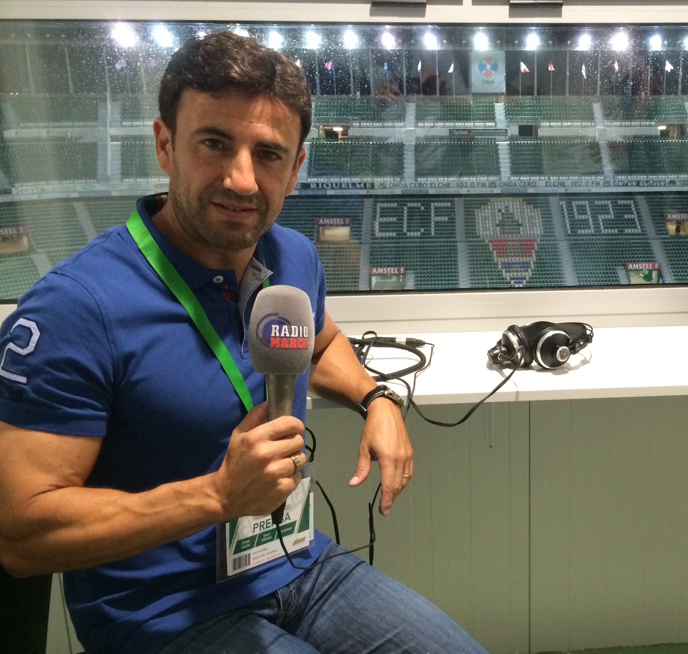

Periodismo deportivo · Radio · Televisión · Marketing
Paco Gómez
Una trayectoria sólida al servicio del deporte ilicitano.
Referente histórico de Elche y la provincia de Alicante, con una carrera iniciada en 1986 y desarrollada entre la radio, la televisión, la dirección deportiva y la comunicación comercial.
Director de Radio MARCA Elche

- Desde 1992
- Dirección de Deportes en radio, televisión y web
- 6 ascensos
- Una voz presente en los grandes hitos del Elche C. F.
- En activo
- Periodismo, publicidad, marketing online y gestión comercial
Biografía profesional
Cuatro décadas de comunicación deportiva y gestión comercial
Paco Gómez es una de las voces históricas y uno de los rostros más reconocibles del periodismo deportivo de Elche y de la provincia de Alicante. Su trayectoria profesional, iniciada en 1986, se ha desarrollado durante cuatro décadas entre la radio, la televisión, la comunicación comercial y el marketing, siempre estrechamente vinculada al deporte y, especialmente, al Elche Club de Fútbol.
Desde 1992 hasta la actualidad ha ejercido como director de Deportes de radio, televisión y web, combinando la dirección editorial y las retransmisiones con la gestión comercial de espacios publicitarios en medios tradicionales y digitales.

Trayectoria
Etapas clave desde 1986 hasta hoy
1986 · Radio Petrer
Los comienzos
Inicia su carrera con programas musicales y retransmisiones deportivas, incluyendo los partidos del Petrerense.
1989-1992 · Radio Elche Cadena SER
Consolidación en radio
Presenta programas musicales, participa en Los 40 Principales, retransmite al Elche C. F. y trabaja en grabación de cuñas publicitarias. En paralelo, dirige durante tres años el programa de humor Tomate un minuto en Radio Minuto.
1992-2011 · Radio Expres Cadena COPE y TeleElx
Dirección de Deportes y gestión comercial
Se incorpora a TeleElx y Radio Expres Cadena COPE como comunicador deportivo y responsable comercial, coordinando contenidos, retransmisiones y comercialización de cuñas, spots y banners.
2011-actualidad · Radio MARCA Elche
Etapa actual de referencia
Tras la transformación de Radio Expres en Radio MARCA Elche, mantiene sus responsabilidades deportivas y comerciales. Desde 2018 ejerce como director de la emisora.
2016-actualidad · Cacahuete Comunicación
Cofundador y socio
Amplía su actividad profesional como cofundador de una agencia especializada en publicidad y marketing online, compaginándola con su labor en medios de comunicación.



Hitos y programas
Cifras y momentos que marcan una carrera
+1.600
Partidos del Elche C. F. retransmitidos desde 1989
+8.100
Programas de Elche en Punta dirigidos y presentados
+1.500
Ediciones de Tiempo de Juego y Marcador en radio
+1.400
Programas de A Todo Gol en TeleElx
Seis ascensos narrados
- 1997: ascenso a Segunda División en Baracaldo.
- 1999: ascenso a Segunda División en Melilla.
- 2013: ascenso a Primera División en Almería.
- 2018: ascenso a Segunda División en Villarreal.
- 2020: ascenso a Primera División en Girona.
- 2025: ascenso a Primera División en A Coruña.

Actualidad 2026
Una voz en activo en radio, televisión y marketing
En 2026 continúa en activo como comunicador deportivo, director de Radio MARCA Elche, director de Deportes de radio, televisión y web, y como cofundador y socio de Cacahuete Comunicación.
Su carrera mantiene una doble vertiente: la dirección y comunicación deportiva, y la gestión comercial y publicitaria de los medios, reforzada en los últimos años por su actividad empresarial en marketing digital.

Redes Sociales
Sigue su trayectoria
Puedes seguir la actualidad y trayectoria profesional de Paco Gómez Gil a través de sus perfiles en redes sociales y plataformas profesionales.